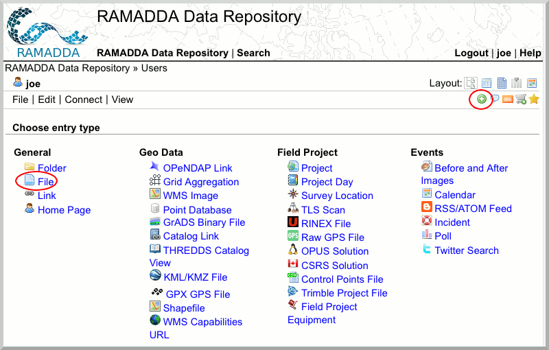
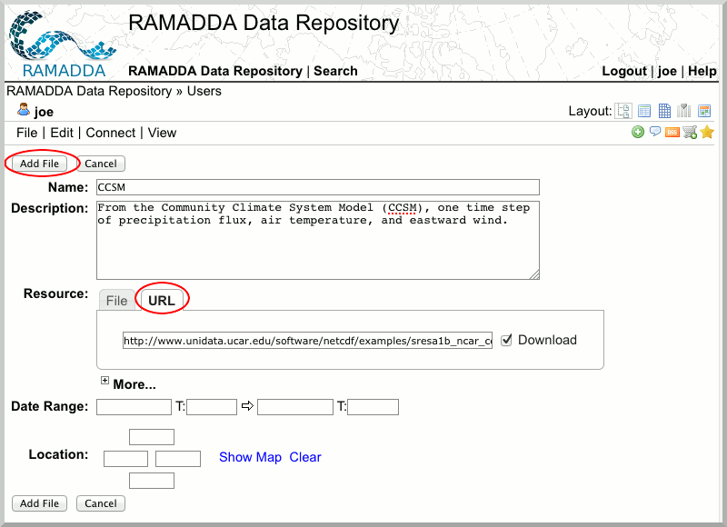

Publishing Content via a Web Browser.
So far, we have mainly been publishing data through the IDV. Users can also publish data directly via the RAMADDA website.
- Go to your RAMADDA Instance and navigate to your Users folder.
- Create a new entry by clicking the plus sign. You will have a panoply of choices. Select "File".

- Enter information about the file you wish to save. For the purposes of this exercise point enter the following URL in the URL tab:
https://motherlode.ucar.edu/thredds/fileServer/galeon/testdata/RUC.nc

We will be examining this file in more detail in the Gridded Data section.